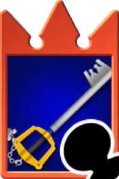
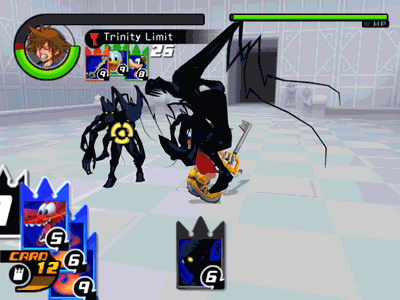
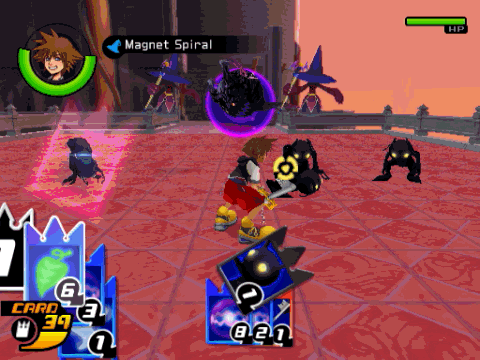
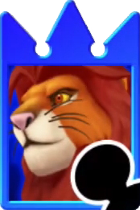
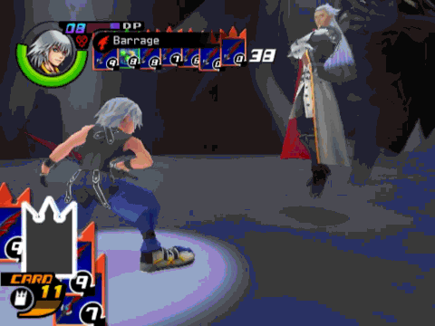
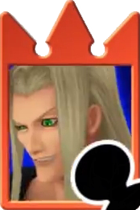
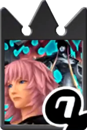

Sora utilizando Estocada Veloz en Kingdom Hearts Re:Chain of Memories
Truco (ストック技 Sutokku Gi) es un término usado en Kingdom Hearts: Chain of Memories y Kingdom Hearts Re:Chain of Memories para referirse a ciertas combinaciones de dos o tres naipes que producen efectos inusuales. Son utilizadas por Sora, Riku y la mayoría de los jefes en el juego. Sora puede aprender sus Trucos subiendo de nivel, avanzando a través de la historia, cuándo obtiene ciertos naipes, o por la búsqueda de ellos en cofres, mientras que Riku comienza el juego con todos sus Trucos. Cada Truco tiene que cumplir ciertos requisitos para activarse, y la mayoría requieren que tres naipes sean de un determinado tipo y/o sumen cierto valor. Algunos Trucos sólo requieren dos naipes, estos Trucos se activan si los naipes almacenados no cumplen ningún otro Truco de tres naipes o usando sólo dos naipes si se desea (para esto debes "almacenar" el Naipe de Recarga en lugar del tercer naipe del mazo o pulsar  y
y  simultáneamente en Re:Chain of Memories). Aunque los Trucos son parte de un rico surtido de combos, el primer naipe de cualquier truco desaparecerá del mazo del jugador a menos que ciertos Naipes Enemigo estén activados, y aunque pueden ser recuperados con Naipes Objeto, el abuso de estos puede llevarte a quedarte sin naipes en la baraja.
simultáneamente en Re:Chain of Memories). Aunque los Trucos son parte de un rico surtido de combos, el primer naipe de cualquier truco desaparecerá del mazo del jugador a menos que ciertos Naipes Enemigo estén activados, y aunque pueden ser recuperados con Naipes Objeto, el abuso de estos puede llevarte a quedarte sin naipes en la baraja.
Los Trucos de Sora se dividen en Trucos de "Ataque", "Magia", "Invocación", y "Aliado", que se clasifican en base a los naipes que requieren. Kingdom Hearts Re:Chain of Memories además introduce dos trucos únicos para el minijuego Bumble-Rumble. Los Trucos de Riku se dividen en Trucos de "Ataque", "Aliado", y en "Trucos de Duelo". A diferencia de otros tipos de Trucos, los "Trucos de Duelo" sólo se puede utilizar mediante la iniciación de un duelo, y pueden llegar a usarse hasta siete naipes.
Trucos de Sora
Trucos de Ataque
| Habilidad | Descripción | Obtención | Criterio | Ejemplo Gráfico |
| Resbalón (スライドダッシュ Suraido Dasshu) | Se desliza por el suelo hacia enemigos lejanos para asestarles golpes. | Nivel 2 |  Tres Naipes de Ataque del mismo tipo. |
|
| Aturdidor (スタンインパクト Sutan Inpakuto) | Aturde a los enemigos cercanos con un solo golpe. | Nivel 7 | Tres Naipes de Ataque del mismo tipo. |
|
| Tiro Mortífero (ストライクレイド Sutoraiku Reido) | Lanza hacia delante la llave espada, que aturde y daña a los enemigos. | Nivel 12 | ||
| Guillotina Final (ファイナルブレイク Fainaru Bureiku) | Salta y lanza un poderoso combo de tres golpes al enemigo. Pulsa | Nivel 17 | Tres Naipes de Ataque de diferente tipo. |
|
| Zantetsuken (ザンテツケン) | Anula un naipe y no permite que se recargue hasta el fin del combate. | Nivel 22 [CoM] Nivel 27 [Re:CoM] | ||
| Estocada Veloz (ソニックレイヴ Sonikku Reivu) | Se lanza al ataque golpeando hasta siete veces a cuantos enemigos se encuentra. Pulsa | Nivel 37 [CoM] Nivel 42 [Re:CoM] | Tres Naipes de Ataque de diferente tipo. |
 |
| Último Arcano (ラストアルカナム Rasuto Arukanamu) | Deja caer una lluvia de hasta trece golpes sobre el enemigo. | Nivel 37 [CoM] Nivel 42 [Re:CoM] |  | |
| Ragnarok (ラグナロクRagunaroku) | Da un gran salto y lanza rayos a los enemigos. | Nivel 47 [CoM] Nivel 52 [Re:CoM] | ||
| Trío Implacable (トリニティリミット Toriniti Rimitto) | Inflige daños contundentes a todos los enemigos en combate. | Entra en el Castillo del Olvido. |  |
Trucos Mágicos
Mira Magia para obetener más información sobre los Niveles de Magia.
| Habilidad | Descripción | Obtención | Criterio | Ejemplo Gráfico |
| Piro+ (ファイラ Faira) | Chamusca a los enemigos con un potente ataque mágico. | Obtén Piro. | ||
| Piro++ (ファイガ Faiga, lit. "Figa") | Chamusca a los enemigos con un fulminante ataque mágico. | Obtén Piro. | ||
| Hielo+ (ブリザラ Burizara) | Hiela a los enemigos con un potente ataque mágico. | Disponible desde el principio. | ||
| Hielo++ (ブリザガ Burizaga) | Hiela a los enemigos con un fulminante ataque mágico. | Disponible desde el principio. | ||
| Electro+ (サンダラ Sandara) | Sacude a los enemigos con un potente ataque mágico. | Obtén Electro. | ||
| Electro++ (サンダガ Sandaga) | Sacude a los enemigos con un fulminante ataque mágico. | Obtén Electro. | ||
| Cura+ (ケアルラ Kearura, lit. "Curera") | Recupera una cantidad de VT considerable. | Disponible desde el principio. | ||
| Cura++ (ケアルガ Kearuga, lit. "Curega") | Recupera gran cantidad de VT. | Disponible desde el principio. | ||
| Gravedad+ (グラビラ Gurabira) | Daña en base a la VT restante del enemigo. | Obtén Gravedad. | ||
| Gravedad++ (グラビガ Gurabiga) | Daña en base a la VT restante del enemigo. | Obtén Gravedad. | ||
| Paro+ (ストプラ Sutopura) | Paraliza por un periodo considerable a los enemigos. | Obtén Paro. | ||
| Paro++ (ストプガ Sutopuga) | Paraliza por un periodo largo a los enemigos. | Obtén Paro. | ||
| Aero+ (エアロガ Earoga) | Expele y daña a los enemigos cercanos. | Obtén Aero. | ||
| Aero++ (エアロガ Earoga) | Expele y daña a los enemigos en un amplio radio. | Obtén Aero. | ||
| Llamarada (ファイアレイド Faia Reido) | Lanza la llave espada e inflige daños por fuego. | Cofre en Monstruo. | ||
| Ventisca (ブリザドレイド Burizado Reido) | Lanza la llave espada e inflige daños por hielo. | Cofre en el Coliseo del Olimpo. | ||
| Tormenta (サンダーレイド Sandā Reido) | Lanza la llave espada e inflige daños por rayo. | 1ª Sala de Recompensa en País de Nunca Jamás. |  | |
| Agujero Negro
[CoM] | Lanza la llave espada e inflige daños por gravedad. | Sala de Recompensa en Ciudad de Halloween. | ||
| Parálisis
[CoM](ストップレイド | Lanza la llave espada, que ejecuta Paro al impactar. | Sala de Recompensa en el País de las Maravillas. | ||
| Justicia Divina (ジャッジメント Jajjimento) | Lanza la llave espada hacia el enemigo y ésta ataca repetidamente. | Cofre en las Islas del Destino. | ||
| Remolino (リフレクトレイド Rifurekuto Reido) | Lanza la llave espada y ésta da vueltas golpeando a los enemigos. | Cofre en Bastión Hueco. | ||
| Espiroimán
[Re:CoM] | Atrae a varios enemigos a tu alrededor para después golpearlos. | Derrota a Riku en la 8ª planta. |  | |
| Pausa Fatal | Detiene el tiempo y asesta varias estocadas a un enemigo. | Nivel 32 |  | |
| Fulgor Inteligente
[CoM] | Ejecuta un hechizo Piro+ que busca el enemigo seleccionado. | Cofre en el País de Nunca Jamás. | Aero+Piro+Naipe Mágico |
|
| Gran Erupción
[CoM] | Causa daños por fuego frente a ti con un potente ataque. | Cofre en Villa Crepúsculo. | ||
| Megafulgor (メガフレア Mega Furea) | Calcina a todos los enemigos en un amplio radio. | Nivel 52 [CoM] Nivel 57 [Re:CoM] | ||
| Témpano Lúcido (ホーミングブリザラ Hōmingu Burizara ) | Ejecuta un hechizo Hielo+ que busca el enemigo seleccionado. | Cofre en Atlántica. | Aero+Hielo+Naipe Mágico |
|
| Salpicón (アクアスプラッシュ Akua Supurasshu) | Vaporiza hielo derretido sobre los rivales, causando daños por hielo. Usa el stick analógico izquierdo para controlar la dirección del ataque. | 1ª Sala de Recompensa en Monstruo. | ||
| Onda de Choque (ショックインパクト Shokku Inpakuto) | El rugido de Simba lanza volando a los enemigos y ejecuta Paro. | Cofre en Atlántica. |  |
|
| Huracán (トルネド Torunedo) | Hace volar por los aires a los enemigos, dañándolos y aturdiéndolos. | Nivel 32 [CoM] Nivel 37 [Re:CoM] | Aero+Gravedad+Naipe de Invocación |
|
| Hipotermia
[Re:CoM] (フリーズ Furīzu) | Congela a los enemigos cercanos. Atacar a un enemigo congelado les causará un daño mayor. | Derrota a Vexen en la 10ª planta. | ||
| Sismo
[Re:CoM] (クエイク Kueiku) | Causa daños a todos los enemigos en tierra con un gran terromoto. | 1ª Sala de Recompensa en Atlántica. | Gravedad+Simba+Naipe Mágico |
|
| Mini Vórtice (デジョネーター Dejonētā, lit. "Dezonator") | Elimina al enemigo más cercano. No siempre tiene éxito. | Derrota a Riku en la 8 ª planta. [CoM] Cofre en Villa Crepúsculo. [Re:CoM] | ||
| Exilio (デジョン Dejon, lit. "Dezone") | Elimina a todos los enemigos a la vista. Los enemigos que se desvanecen no soltaran objetos. No siempre tiene éxito. | Sala de Recompensa en Villa Crepúsculo.[CoM] Sala de Recompensa en Agrabah. [Re:CoM] | ||
| Plantado (バインド Baindo) | Paraliza. Los enemigos pueden seguir atacando desde donde están. | Encuentra a Ígor.[CoM] 1ª Sala de Recompensa en Ciudad de Halloween.[Re:CoM] | Gravedad+Paro+Naipe Mágico |
|
| Confusión (コンフュ Konfu) | Confunde a los enemigos para que ataquen menos. | Encuentra a Piglet. | Genio+Campanilla+Naipe de Invocación |
|
| Descarga Ígnea
[Re:CoM] | Lanza un gran proyectil de fuego al aire que se fragmenta en otros más pequeños. | Completa De Globo en Globo | ||
| Terror (テラー Terā) | Mete miedo a los enemigos y éstos no osan acercarse. | Entra en Ciudad de Halloween. | Naipe de Invocación+Naipe de Invocación+Jack Simba+Mushu+Naipe Objeto |
|
| Sincronizador (シンクロ Shinkuro) | Iguala VT de los enemigos a la de un rival seleccionado. | Encuentra a Conejo.[CoM] 1ª Recompensa del País de las Maravillas.[Re:CoM] | ||
| Caído del Cielo (ミラクルギフト Mirakuru Gifuto, lit. "Miracle Gift") | Recarga naipes y resetea el contador. Restablece VT de enemigos y aliados. | Cofre en Ciudad de Halloween. | Bambi+Hielo+Naipe Objeto |
|
| Televiaje (テレポ Terepo) | Reaparece tras el enemigo seleccionado, quedando éste aturdido un tiempo. | Cofre en el País de Nunca Jamás. | Paro+Aero+Naipe Objeto |
 |
| Sanctus (ホーリー Hōrī) | Causa daños a un enemigo seleccionado y a los colindantes. | Nivel 42[CoM] Nivel 47[Re:CoM] | Omniéter+Omnielixir+Naipe Objeto |
|
| Pira
[Re:CoM] | Tres torbellinos de fuego surgen alrededor de Sora y dañan a los rivales que tocan. | Cofre en el Castillo del Olvido. |  |
Trucos de Invocación
| Habilidad | Descripción | Obtención | Criterio | Ejemplo Gráfico |
| Rugido Noble Nv2 (プラウドロアLv2, Puraudo Roa Lv2) | El rugido de Simba aturde y daña a los enemigos que estén frente a él. | Obtén a Simba. |  | |
| Rugido Noble Nv3 (プラウドロアLv3, Puraudo Roa Lv3) | El rugido de Simba aturde y daña aún más a los enemigos que estén frente a él. | Obtén a Simba. |  | |
| Empapar Nv2 (スプラッシュLv2, Supurasshu Lv2)
| Dumbo empapa a los enemigos, causando daños por hielo. | Obtén a Dumbo. |  | |
| Empapar Nv3 (スプラッシュLv3, Supurasshu Lv3)
| Dumbo empapa a los enemigos durante más tiempo, causando daños por hielo. Usa el joystick analógico izquierdo para controlar la dirección del ataque. | Obtén a Dumbo. |  | |
| Paraíso Nv2 (パラダイスLv2, Paradaisu Lv2)
| Bambi brinca dejando caer objetos curativos. | Obtén a Bambi. |  | |
| Paraíso Nv3 (パラダイスLv3, Paradaisu Lv3)
| Bambi brinca dejando caer objetos curativos y aturdiendo a los enemigos. | Obtén a Bambi. |  | |
| Edenia (パラダイススタンプ, Paradaisu Sutanpu, "Paradise Stamp")
| Bambi brinca de un lado a otro confundiendo a los enemigos. | Encuentra a Tigger.[CoM] Completa Brincos con Tigger.[Re:CoM] |  | |
| Soplo Ardiente Nv2 (フレアブレスLv2, Furea Buresu Lv2)
| Mushu exhala fuego contra los enemigos. | Obtén a Mushu. |  | |
| Soplo Ardiente Nv3 (フレアブレスLv3, Furea Buresu Lv3)
| Mushu exhala más cantidad de fuego contra los enemigos. | Obtén a Mushu. |  | |
| Ataque Genial Nv2 (ショータイムLv2, Shōtaimu Lv2)
| Genio lanza dos hechizos de entre Gravedad+, Electro+ y Paro+. | Obtén a Genio. |  | |
| Ataque Genial Nv3 (ショータイムLv3, Shōtaimu Lv3)
| Genio lanza tres hechizos de entre Gravedad+, Electro+ y Paro+. | Obtén a Genio. |  | |
| Centelleo Nv2 (ツインクルLv2, Tsuinkuru Lv2)
| Campanilla restaura VT durante un periodo de tiempo considerable. | Obtén a Campanilla. |  | |
| Centelleo Nv3 (ツインクルLv3, Tsuinkuru Lv3) | Campanilla restaura VT durante un periodo de tiempo largo. | Obtén a Campanilla. |  | |
| Látigo-cruzado (凶斬り, Kyougiri lit. "Bane-slash") | Cloud arremete contra los enemigos con un combo de tres golpes. | Obtén a Cloud. |  | |
| Omnilátigo (超究武神覇斬, Choukyūbushinhazan lit. "Super-ultimate War-god Commanding Slash") | Cloud cae desde el cielo atacando a los enemigos hasta cinco veces. | Obtén a Cloud. |  | |
| Látigo-cruzado+ (凶斬り・改, Kyougiri-kai, lit. "Bane-slash Revision") | Cloud se teleporta a la espalda de un rival y ejecuta Látigo-cruzado. | Cofre en Bastión Hueco.[CoM] Completa Pánico en el Huerto.[Re:CoM] |  |
Trucos de Aliados
| Habilidad | Descripción | Obtención | Criterio | Ejemplo Gráfico |
| Magia Nv2 (マジックLv2 Majikku Lv2) | Donald lanza dos veces Piro+, Hielo+, Electro+ o Cura+. | Disponible desde el principio. |  | |
| Magia Nv3 (マジックLv3 Majikku Lv3) | Donald lanza dos veces Piro++, Hielo++, Electro++ o Cura++. | Disponible desde el principio. |  | |
| Donald Humeante
[CoM] | Donald lanza un hechizo de fuego... | 1ª Sala de Recompensa en Agrabah. | Piro+Donald+Naipe Mágico | |
| Descarga Estelar
[Re:CoM] | Donald te lanza hasta tres bolas de fuego que puedes golpear contra el rival. Pulsa | 1ª Sala de Recompensa en Villa Crepúsculo. |  | |
| Ataque Goofy
[CoM] | Goofy arremete usando su escudo, dañando y aturdiendo a los enemigos. | Disponible desde el principio. | ||
| Goofy Tornado Nv2
[Re:CoM] | Goofy gira alrededor de Sora y golpea a los enemigos con su escudo. | Disponible desde el principio. |  | |
| Goofy Tornado Nv3 (グーフィートルネドLv3 Gūfī Torunedo Lv3) | Goofy gira alrededor de Sora y golpea a los enemigos con su escudo durante más tiempo. | Disponible desde el principio. |  | |
| Goofy Empellón
[Re:CoM] | Goofy y Sora unen sus fuerzas en un ataque que lanza por los aires a los rivales. Pulsa | Disponible desde el principio. | Goofy+Naipe de Ataque |
 |
| Cascatorsos
[Re:CoM] | Usa a Goofy como ariete contra los rivales. Usa el joystick analógico izquierdo para controlar la dirección del ataque. | Disponible desde el principio. | ||
| Buen Botín Nv2
[Re:CoM] | Pluto desentierra naipes y orbes de VT. | Disponible desde el principio. |  | |
| Buen Botín Nv3
[Re:CoM] | Pluto desentierra un montón de naipes y orbes de VT. | Disponible desde el principio. |  | |
| Tormenta de Arena Nv2 (ストームリーパーLv2 Sutōmu Rīpā Lv2, lit. "Storm Reaper Lv2") | Aladdín corre de un lado a otro dando sablazos con su alfanje, lo que aturde a los rivales y proporciona orbes de puntos Moguri. | Obtén a Aladdín. |  | |
| Tormenta de Arena Nv3 (ストームリーパーLv3 Sutōmu Rīpā Lv3, lit. "Storm Reaper Lv3") | Aladdín corre de un lado a otro dando sablazos con su alfanje más tiempo, lo que aturde a los rivales y proporciona orbes de puntos Moguri. | Obtén a Aladdín. |  | |
| ¡Sorpresa! Nv2 (サプライズLv2 Sapuraizu Lv2) | Jack lanza dos veces Piro+, Hielo+, Electro+ o Gravedad+. | Obtén a Jack. |  | |
| ¡Sorpresa! Nv3 (サプライズLv3 Sapuraizu Lv3) | Jack lanza tres veces Piro+, Hielo+, Electro+ o Gravedad+. | Obtén a Jack. |  | |
| Torbellino Nv2 (スパイラルウェイブLv2 Supairaru Weibu Lv2) | Ariel arremete contra el rival dos veces y termina dándole un buen coletazo. Pulsa | Obtén a Ariel. |  | |
| Torbellino Nv3 (スパイラルウェイブLv3 Supairaru Weibu Lv3) | Ariel arremete contra el rival tres veces y termina dándole un buen coletazo. Pulsa | Obtén a Ariel. |  | |
| Puñal Veloz Nv2 (スラストラッシュLv2 Surasuto Rasshu Lv2 lit. "Thrust Rush Lv2") | Peter Pan usa su puñal para atacar a los rivales. Pulsa | Obtén a Peter Pan. |  | |
| Puñal Veloz Nv3 (スラストラッシュLv3 Surasuto Rasshu Lv3 lit. "Thrust Rush Lv3") | Peter Pan usa su puñal para atacar a los rivales durante más tiempo. Pulsa | Obtén a Peter Pan. |  | |
| Embestida Feroz Nv2
[CoM] | Bestia arremete en línea recta. | Obtén a Bestia. |  | |
| Embestida Feroz Nv3
[CoM] | Bestia arremete en línea recta llevándose todo por delante. | Obtén a Bestia. | ||
| Volea Feroz Nv2
[Re:CoM] | Bestia lanza a un enemigo hasta dos veces contra Sora. Pulsa | Obtén a Bestia. |  | |
| Volea Feroz Nv3
[Re:CoM] | Bestia lanza a un enemigo hasta tres veces contra Sora. Pulsa | Obtén a Bestia. |  |
Trucos de Abejas Zumbonas
| Habilidad | Descripción | Obtención | Criterio | Ejemplo Gráfico |
| Tormenta de Miel (ハニーストーム Hanī Sutōmu) | Extermina a un enjambre de abejas con tarros de miel mientras que sopla al resto. | Abejas Zumbonas | ||
| Tarro de Miel (ハニーポット Hanīpotto) | Recupera una cantidad muy grande del medidor de miel de Pooh. | Abejas Zumbonas |
Trucos de Riku
Trucos de Ataque
| Habilidad | Descripción | Criterio | Ejemplo Gráfico |
| Golpe Tenebroso (ダークブレイク Dāku Bureiku) | Da un salto y ataca desde las alturas. Sólo en Modo Oscuro. En Kingdom Hearts Re:Chain of Memories, pulsa | ||
| Flama Tenebrosa (ダークファイガ Dāku Figa, lit. "Dark Figa") | Descarga de energía oscura. Sólo en Modo Oscuro. Este ataque es de elemento oscuridad, no del elemento fuego. | ||
| Razia Tenebrosa (ダークオーラ Dāku Ōra) | Arremete repetidamente contra los rivales. Termina clavando la Devora Almas en el suelo produciendo columnas de luz que confunden al enemigo, Sólo en Modo Oscuro. |
Trucos de Aliados
| Habilidad | Descripción | Criterio | Ejemplo Gráfico |
| Milagro Nv2 (MMミラクルLv2 MM Mirakuru Lv2) | El rey restaura VT, aturde e inflige daño a todos los enemigos, y recarga los naipes. | ||
| Milagro Nv3 (MMミラクルLv3 MM Mirakuru Lv3) | El rey restaura una gran cantidad de VT, aturde e inflige daño a todos los enemigos, y recarga los naipes. | ||
| Ímpetu Sacro
[Re:CoM] | Dispara rayos de luz espalda con espalda con el rey. Utiliza el sitck analógico izquierdo para controlar la dirección del tornado. | ||
| Descarga Inversa
[Re:CoM] | Dispara rayos de luz y oscuridad espalda con espalda con el rey. Los enemigos se confunden cuando son golpeados. Utiliza el sitck analógico izquierdo para controlar la dirección del tornado. Sólo en Modo Oscuro. |
Trucos de Retos
| Habilidad | Descripción | Criterio | Ejemplo Gráfico |
| Impulso[Re:CoM] (インパルス Inparusu) | Golpea al enemigo con una flama de oscuridad antes de saltar al aire y rematar contra el suelo, creando una onda de choque que daña a varios enemigos. | Gana un reto que requiera que canceles tres naipes. | |
| Impulso Oscuro[Re:CoM] (ダークインパルス Dāku Inparusu) | Golpea al enemigo con una flama de oscuridad antes de saltar al aire y rematar contra el suelo con un fuerte golpe, creando una amplia onda de choque que daña a varios enemigos. Solo en Modo Oscuro. | Gana un reto que requiera que canceles tres naipes. | |
| Vorágine[Re:CoM] (メイルストロム Meirusutoromu) | Da rienda suelta a un ataque giratorio sobre el enemigo. El daño se concentra a un enemigo. | Gana un reto que requiera que canceles cinco naipes. | |
| Vorágine Oscuro[Re:CoM] (ダークメイルストロム Dāku Meirusutoromu) | Da rienda suelta a un ataque giratorio de gran alcance sobre el enemigo. El daño se concentra a un enemigo. Solo en Modo Oscuro. | Gana un reto que requiera que canceles cinco naipes. | |
| Asalto[Re:CoM] (バラージュ Barāju) | Lanza la Devora Almas hacia el enemigo. El daño se concentra en un enemigo. | Gana un reto que requiera que canceles siete naipes. |  |
| Asalto Umbrío[Re:CoM] (ダークバラージュ Dāku Barāju) | Lanza múltiples Devora Almas hacia el enemigo. El daño se concentra en un enemigo. Solo en Modo Oscuro. | Gana un reto que requiera que canceles siete naipes. |
Trucos de Jefes
| Habilidad | Descripción | Criterio | Ejemplo Gráfico |
| Látigo-Cruzado (凶斬り, Kyougiri lit. "Bane-slash") | Cloud arremete contra los enemigos con un combo de tres golpes. | ||
| Omnilátigo (超究武神覇斬, Choukyūbushinhazan lit. "Super-ultimate War-god Commanding Slash") | Cloud cae desde el cielo atacando a los enemigos hasta cinco veces. |  | |
| Bola Ígnea (ファイガボール Faiga Bōru, lit. "Figa Ball") | Hades concentra su poder en lanzar una a una dos grandes bolas de fuego directas a su objetivo. | ||
| Furia Ardiente (ブレイズアップ Bureizu Appu, lit. "Blaze Up") | Hades extiende sus brazos a cada lado y emite una gran rafaga de fuego en cada brazo mientras gira desde el sitio obligandote a pasar debajo de ellas con voltereta. |  | |
| Brío y Regala
[CoM] (ラッシュ＆プレゼント Rasshu ando Purezento) | Garfio lanza hasta 6 regalos explosivos de uno en uno. |  | |
| Andanada
[Re:CoM] (バレルブラスト Bareru Burasuto) | Garfio salta a un lado del barco e invoca una fila de 6 barriles explosivos que va lanzado de uno en uno, y luego salta hacia ti para atacarte y vuelve a saltar al otro lado del barco a la vez que los barriles llegan repitiendo el proceso de saltar y atacar 2 veces más. |  | |
| Combo y Regalo (コンボ＆プレゼント Konbo ando Purezento) | Garfio realiza un largo combo con su espada que acaba lanzando regalos explosivos. |  | |
| Muro de Fuego (ファイアウォール Faia Wōru) | Axel concentra su poder en crear un muro de fuego a su alrededor para luego extenderlo por todo el perímetro del área de combate. |  | |
| Colmillo Ígneo (ファイアカッター Faia Kattā, lit. "Fire Cutter") | Axel lanza dos chakrams en llamas a Sora o crea cuatro chakrams en llamas que rebotan alrededor del área de combate y que pueden dañar a Sora en el proceso. Solo lo utiliza en la segunda batalla. |  | |
| Megavatios
[Re:CoM] (メガヴォルト Megavoruto) | Larxene da una voltereta hacia atrás y se eleva lanzando 4 garras eléctricas a cada lado contra el suelo que al impactar invocan columnas eléctricas de corta duración a su alrededor que se van extendiendo progresivamente. |  | |
| Relámpago [CoM] (ライトニングボルト Raitoningu Boruto) | Larxene concentra su poder en un rayo que atrapa al rival de frente haciendo daño continuo y le deja aturdido. | ||
| Haz de Aceros [Re:CoM] (ブレイドストーム Bureido Sutōmu) | Larxene esparce por el campo de batalla sus garras y se eleva mientras que estas se vuelven emisores estáticos de rayos de larga duración que van cambiando de dirección. Si un rayo acierta, los demás te apuntarán ocasionadote daño continuo que al terminar te dejará aturdido. |  | |
| Esfumado (テレポートラッシュ Terepōto Rashu) | Larxene se va teletransporatando y corriendo hacia ti para atacarte con sus garras 5 (GBA) o 10 veces. |  | |
| Agujas Heladas (アイスニードル Aisu Nīdoru) | Vexen canaliza su poder en el suelo, surgiendo de él robustos carámbanos de hielo que persiguen a su oponente. |  | |
| Hipotermia (フリーズ Furīzu) | Vexen concentra su poder en su oponente y lo encierra en hielo (en Re:Chain of Memories además se acerca para atacarlo). |  |
|
| Polaria[CoM]
(アイスバーン Aisu Bān) | Vexen crea charcos de hielo resbaladizos en el suelo que dificultan el movimiento de su oponente. |  | |
| Envite Deslizante[Re:CoM] (スライドブレイク Suraido Bureiku) | Vexen alarga la parte inferior de su escudo Orgullo Helado, transformándolo en una cuchilla de hielo monstruosa. Luego golpea a su oponente con el arma mejorada varias veces antes de realizar un golpe final hacia abajo, rompiendo así la hoja de hielo y volviendo el escudo a la normalidad. |  | |
| Polvo de Diamante (ダイヤモンドダスト Daiamondo Dasuto) | Vexen crea una tormenta de hielo que lentamente causa daño a su oponente y cubre todo el campo de batalla. Solo en Reverse/Rebirth. |  | |
| Golpe Sísmico[Re:CoM] (インパクトクエイク Inpakuto Kueiku) | Lexaeus clava la hoja de su arma en el suelo haciendo que dos pilares de roca sobresalgan de la tierra al mismo tiempo en lugares aparentemente aleatorios del campo de batalla. Acto seguido aparecen de uno en uno sucendiendose entre sí y siguiendo al oponente, causando daños severos si no se esquivan. Disponible cuando aún no ha usado cartas mágicas. |  | |
| Pulverizador (ロックブレイク Rokku Bureiku, lit. "Rock Break") | Lexaeus hace sobresalir rocas del suelo a su alrededor y usa su Espada Hacha para destruirlas con un golpe de 360º, permitiéndole dañar a Riku sin importar dónde esté. En Kingdom Hearts: Chain of Memories, solo invoca una roca que destruye con la mano provocando que los trozos reboten por el campo de batalla. En Re:Chain of Memories, este truco solo puede usarlo después de aumentar su poder al menos una vez. |  | |
| Impacto Telúrico[Re:CoM] (グランドインパクト Gurando Inpakuto) | Lexaeus usa todo su poder para impactar con su Espada Hacha en el suelo y liberar la energía que tiene almacenada en un mega ataque que puede dañar no solo a Riku sino también al campo de batalla. Disponible solo después de haber usado dos cartas mágicas. |  | |
| Agarre Ciclón
[Re:CoM] (サイクロンスナッモ Saikuron Sunammo) | Zexion concentra todo su poder para crear un tornado en medio del campo de batalla que absorve tus naipes de ataque si estás cerca (cuando ha absorbido la cantidad de cartas necesaria invoca la espada de Riku y puede hacer los 2 trucos de abajo). Sólo se pueden recuperar destruyendo todos los libros que deja cuando ha creado copias de sí mismo (los libros otorgan un poco de experiencia al destrozarlos). |  | |
| Castigador Umbrío
[Re:CoM] (ダークパニッシャーDāku Panisshā) | Las demás copias desaperecen y el Zexion original se acerca agarrandote por la espalda mientras te va desgastando la vitalidad poco a poco. |  | |
| Catástrofe
[Re:CoM] (カタストロフィーKatasutorofī) | Los 5 Zexion concentran su poder en el medio de la arena generando una esfera que se hace más grande y cuando esta ya está cargada el Zexion original salta arremetiendo contra ella dando lugar a una explosión. |  | |
| Lluvia de Petalos (ブロッサムシャワー Burossamu Shawā) | Marluxia crea una onda de petalos que daña si no se esquiva. Marluxia se va teletransportando continuamente desde el aire realizando 3 ataques, después se teletransporta al medio del campo de batalla provocando una onda expansiva en el suelo que al finalizar emerge del suelo desde donde alcanzó invocando petalos que se dirigen a ti a modo de proyectiles. Hace brotar una onda de petalos de su mano que se extienden por el campo de batalla. |  | |
| Guadaña Letal (デスサイズ Desusaizu) | Marluxia hace un corte de largo alcance. Marluxia se teletransporta cerca de ti en el aire mientras da 3 golpes pausados que rayan de rosa la zona en la que te encuentras y finaliza teletransportandose a tu lado. |  | |
| Tiro con Premio [Re:CoM] (ドロップショット Doroppu Shotto) | Marluxia se teletransporta hacia el aire ejecutando un salto en picado que agrieta el suelo haciendo daño de area, después del impacto pega un gran salto ascendente hacia atrás. |  | |
| Rompecascos
[Re:CoM] (兜割り Kabuto Wari) | Da un salto y ataca desde las alturas arremetiendo directamente al objetivo hasta 3 veces de forma pausada provocando un rayo de oscuridad y una onda en su impacto. El golpe de gracia desata más rayos de frente. |  | |
| Flama Tenebrosa (ダークファイガ Dāku Faiga, lit. "Dark Figa") | Descarga de energía oscura que sigue a su objetivo. Este ataque es del elemento oscuridad, no del elemento fuego. | ||
| Razia Tenebrosa (ダークオーラ Dāku Ōra) | Arremete repetidamente contra los rivales teletransportándose desde diferentes direcciones. Termina clavando la Devora Almas en el suelo produciendo rayos de oscuridad a su alrededor que confunden al enemigo. |  | |
| Pulso Lacerador[Re:CoM]
(衝撃斬 Shougekizan) | El Guardián de Ansem desde su espalda lanza discos afilados que ocasionan graves daños si no se esquivan correctamente. | ||
| Brío Oscuro (ダークラッシュ Dāku Rasshu) | Realiza un ataque de carga con su guardián de frente hasta 5 veces. |
|
|
| Sombra Tenebrosa (ダークシャドウ Dāku Shadou) | El Guardián emerge del suelo hasta 8 veces y acabando con una 9ª junto a Ansem provocando daño en area y generando 4 estelas en el suelo en sentidos opuestos. |  | |
| Omniláser[Re:CoM]
(全方位レーザー Zenhōi Rēzā, lit. "Omnidirectional Laser") | (Antes de hacer el truco hace aparecer en el "meridiano" flores emisoras) Uno de los "meridianos" que rota alrededor del área de batalla comienza a emitir láseres rosas que apuntan a su propio centro el cuál se va acercando a Sora. |  | |
| Rechazo Circular[Re:CoM]
(サークルリジェクト Sākuru Rijekuto) | La figura gigantesca con forma de una mujer ángel que se encuentra detrás de Marluxia, se teletransporta al centro del campo de batalla, y utilizando su versión mucho más grande de la guadaña de Marluxia, crea una gran onda rosa de petalos giratoria al impactar la parte baja de la guadaña en el suelo. |  | |
| Condena[Re:CoM]
(死の宣告 Shi no Senkoku, lit. "Death Sentence") | Marluxia lanza una "cinta" incorporea que se dirige a Sora que al acertar le deja inmovil y con un contador en la cabeza que al llegar a 0 hace que la figura gigantesca provoque a Sora una muerte súbita con un golpe de su guadaña a no ser que se gane el duelo de 6 cartas propuesto. |  | |
| Vórtice a la Nada[Re:CoM]
(虚無への旋風 Kyomu e no Senpū) | Marluxia lanza un pequeño tornado (que al poco se convierte en 3 tornados que giran juntos en torno al mismo centro) muy rapido que al impactar hace que las cartas de Sora se esparzan por el escenario. |  |
 |
| Vendaval Supresor[Re:CoM]
(断絶の烈風 Danzetsu no Reppū) | Marluxia te aleja de él y crea un vendaval de petalos que le dificulta a Sora acercarse. |  |
Notas y Referencias
- ↑ Este truco fue mal traducido como "Lethal Flame" en la versión americana, llamándose en verdad "Lethal Frame".